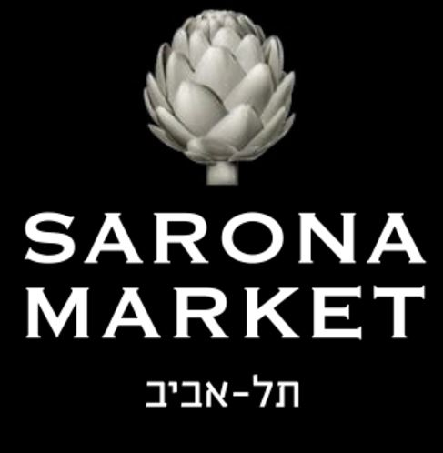
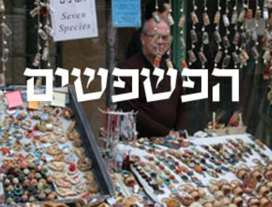
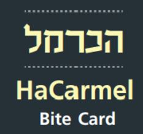

קולינריה
קולינריה היא אומנות הבישול והאכילה, השמה דגש על טעם, מראה וריח.
כאן תוכלו למצוא מסעדות ודוכנים בשווקים השונים.
מסעדות
דוכני על הדרך

שרונה מרקט
בנדיקט, מקס ברנר, טייגר לילי, מרינדו
הבשר, פושון, אראיס, הירו ראמן בר
פסטה פיורי, אבו שוקרי, ביירן מרקט, זה סושי,
שגב קונספט, מיט בר בורגר, דלי פליישמן
שוק צפון
מקסיקנה, גו נודלס, מיאזקי, פורנטו,
קיוסקי, אנטואנט, קרפרי
בורקס פוני, לחמנינה, כתר המזרח, דלישס

שוק הפשפשים
איטלקייה בפשפשים, שקד אקספרס,
קפה יפו מרגוזה בר, פלי מרקט
יאללה בסטה, ד"ר שקשוקה, מזנון חומוס דני

שוק הכרמל
חומוס מגן דוד, הנסיך,
מסעדת ארז, ביר בזאר
הקציצונת, לה קפה, הסבתות, ששון,
המלבייה, בורקס טורקי אורגינל